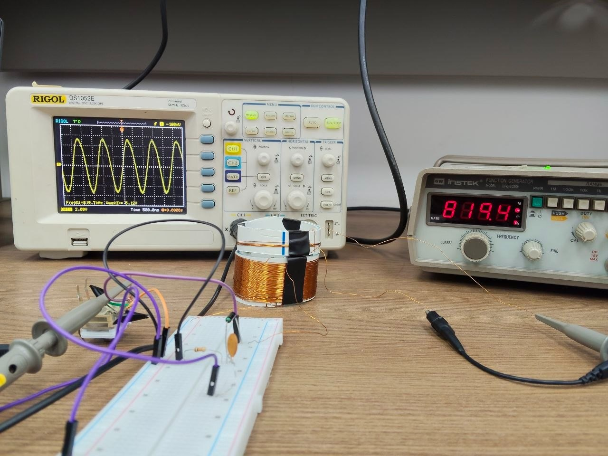
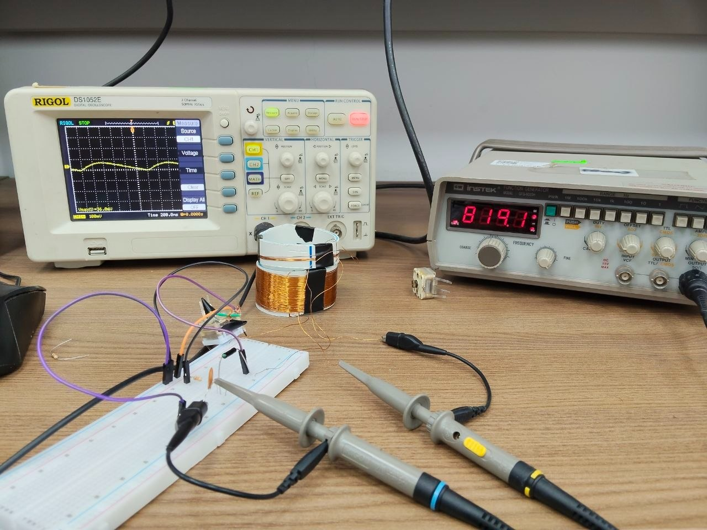

This dial is live. It uses our coil's predicted inductance (291 µH) and the capacitor's range. Drag it and watch f₀ move.
Page 1
What Milestone 1 is
Every AM receiver starts with the same two halves. A tuned circuit picks one station out of everything the coil catches, and a detector pulls the sound out of that station's carrier. Milestone 1 (M1) is exactly those two halves, built by hand.
The tank
A coil L and a tuning capacitor C resonate at one frequency:
f₀ = 1 / (2π√(LC))
Our coil is 75 turns of 0.3 mm enamelled copper wire on a 50 mm PVC pipe. Wheeler's formula for a single-layer coil gives:
L ≈ d²n² / (457d + 1016l) ≈ 291 µH
d = 50 mm, n = 75 turns, l ≈ 25 mm.
The detector
A 1N60P diode and a 15 kΩ // 3.3 nF pair form a peak rectifier. It follows the peaks of the signal, so a steady sine becomes a DC level and an AM station becomes sound.
RC = 15 kΩ × 3.3 nF ≈ 49.5 µs
Page 2
The journey
Designing the circuit took an afternoon. Getting the parts, winding the coil and seeing a clean signal took much longer. This is how it went.
-
Chapter 1
Hunting for the parts
We started where every Egyptian electronics student starts: downtown, the main market for components. We went from shop to shop. They had the diode, the resistor and the small capacitor, but nobody had a variable tuning capacitor, and nobody had the thin enamelled copper wire we needed.
One of our classmates then travelled to Nasr City and finally found the capacitor. The wire came from a different direction: an old motor-repair shop in the hometown of one of our teammates, where rewound motors leave plenty of enamelled copper. The kit lists about 12 m of 0.3 mm wire, and we needed nearly all of it for 75 turns around a 50 mm pipe (75 × π × 50 mm ≈ 11.8 m).
-
Chapter 2
Winding the coil by hand
We had no winding machine, so we wound everything turn by turn by hand. The rule is simple and strict: every turn lies right next to the previous one, with no gaps and no crossings, so the coil stays a tidy single layer. We wound two coils this way: the 75-turn coil on the 50 mm PVC pipe for the tank, and the 5-turn test loop that the signal source drives.
We taped the start of the wire to the pipe, wound the turns, taped the end, then scraped about 1 cm of enamel off each end until the copper shone. Winding the 75 turns took about 15 minutes. The finished coil is about 30 mm long, a little longer than the 25 mm we assumed in our prediction. Plugging 30 mm into Wheeler's formula gives about 264 µH instead of 291 µH, so we expect the real tank to resonate slightly higher than the predicted values.
-
Chapter 3
Wiring it on the breadboard
We fixed the tuning capacitor to the pipe and joined the coil's ends to the capacitor's AM section terminals (our grader confirmed which two). On the breadboard we placed the 1N60P from TP1, the top of the tank, to TP3 with its band towards TP3, and then the 15 kΩ and the 3.3 nF side by side from TP3 to ground.
-
Chapter 4
A source that reaches the band
The circuit can only be tested with a signal inside the medium-wave band, from about 560 kHz to 2.1 MHz. Finding a function generator that reached that high turned out to be a problem of its own. We kept searching until we got hold of a GW Instek GFG-8020H, which we set to 819.4 kHz with an amplitude of about 5 V. It drives the 5-turn test loop, which sits a few centimetres from the coil, on the same axis.
-
Chapter 5
Fighting the noise on the scope
With the generator running, the first scope pictures were hard to understand. The trace was full of noise and we could not tell which part of it, if any, was our signal. The fix turned out to be tiny: a switch on the probes.
The struggle and the solution. Each probe has a small slide switch that selects ×1 or ×10. In ×1 the probe connects the circuit straight to the scope, and, as the lab sheet warns, it adds about 100 pF. That is almost as much as the roughly 130 pF our tank needs at 819 kHz, so the probe detunes and loads the circuit, and what reaches the scope is mostly noise. In ×10 the probe divides the signal by ten and adds far less capacitance, so it barely disturbs the tank. We flicked the switch up to ×10 on both probes, and the noise disappeared at once and a clean sine appeared. (The channel's own probe setting must also be on ×10, or the scope's voltage readings come out ten times too small.)We then looked at TP1. It showed a clean sine at the same frequency as the source, about 819 kHz. At TP3 the detector did its job: the diode only passes one half of each cycle, and the 3.3 nF capacitor smooths that into a small, nearly constant DC level. Seen close up on the scope it ripples slightly, but zoomed out it looks like a straight line, which is what a steady sine should give.

TP1: a clean sine at about 819 kHz on the scope, with the generator at 819.4 kHz. 
TP3: the detector's output, a small, nearly constant level. This trace is heavily zoomed in (100 mV per division); zoomed out it is almost a straight line.
Page 3
What the numbers say
Table 4 is calculated by hand. Tables 5 and 6 are laid out and ready for our readings, which are still to come.
Table 4 · Predictions
| L (µH) | C for 819 kHz (pF) | f at 280 pF (kHz) | f at 20 pF (MHz) | RC (µs) |
|---|---|---|---|---|
| 291 | 130 | 557 | 2.08 | 49.5 |
Table 5 · The tank at TP1
| Band low end (kHz) | Band high end (MHz) | f₀ at half travel (kHz) | flow (kHz) | fhigh (kHz) | Q |
|---|---|---|---|---|---|
| — | — | — | — | — | — |
Half travel is about 150 pF, which predicts f₀ ≈ 761 kHz. Q = f₀ / (fhigh − flow).
Table 6 · The detector at f₀
| Source setting (V) | TP1 peak (mV) | TP3 DC (mV) |
|---|---|---|
| 0.05 | — | — |
| 0.1 | — | — |
| 0.2 | — | — |
| 0.3 | — | — |
| 0.5 | — | — |
| 1 | — | — |
The weakest settings may show almost nothing at TP3 because of the diode's dead zone.
Page 4
What we learned
- Parts are part of the design. The market is not a catalogue. Check what exists, and where, before relying on a part.
- A coil is only as good as its winding. Tight, ordered turns are what make Wheeler's formula believable.
- Measuring changes the circuit. A probe's own capacitance can detune a resonant circuit. Moving our probes from ×1 to ×10 was the difference between noise and a clean sine.
- Resonance is selective. Only a narrow range around f₀ passes strongly. That is what lets a radio choose one station.
- Know your instruments' limits. The band starts at 560 kHz, and not every function generator reaches it. Check an instrument's range before the lab slot.
- Protect your measuring time. The lab closed on us just as we were ready to measure, twice. Measuring needs its own booked time, not whatever is left at the end.
Page 5
What comes next
M1 gives us a tuned circuit and a detector. A real receiver also needs gain before the detector, so weak stations rise above the diode's dead zone, and gain after it, so the sound can drive a speaker. Those are the next milestones, and each gets its own tab at the top of this page, starting with Milestone 2.
Milestone 2
Milestone 2
This milestone is still ahead of us.
Milestone 2 builds on the tuner and detector from Milestone 1. When it is done, this tab will tell its story the same way: the goal, the journey and its challenges, the results and the lessons.
It is also when we will take the Milestone 1 readings that the lab schedule kept us from taking. They will be added to the Results section of the Milestone 1 tab.